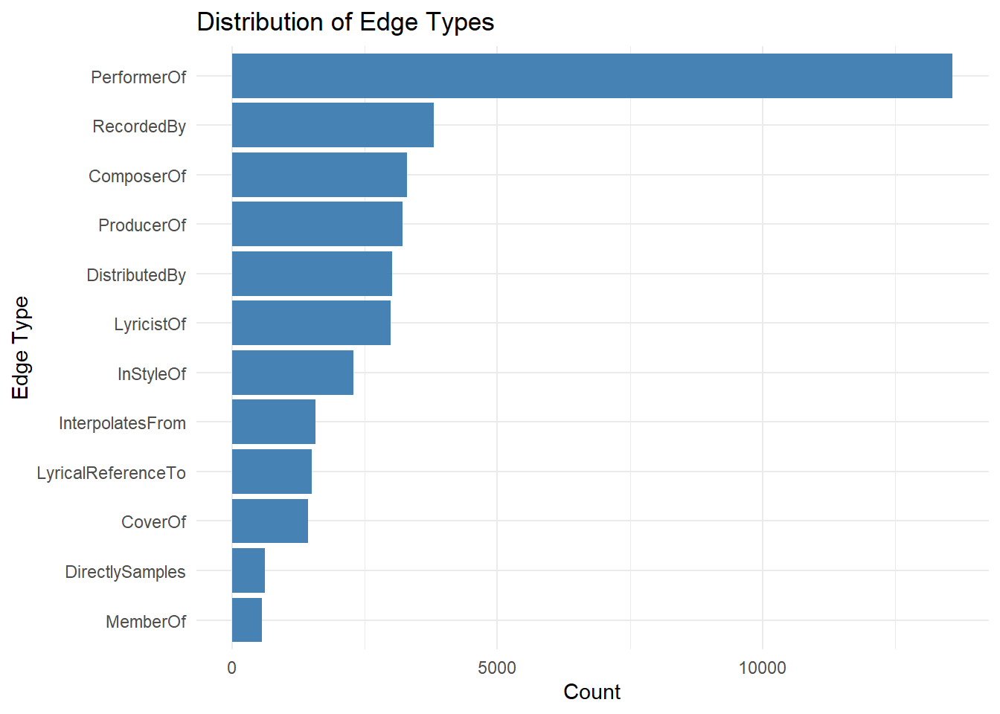
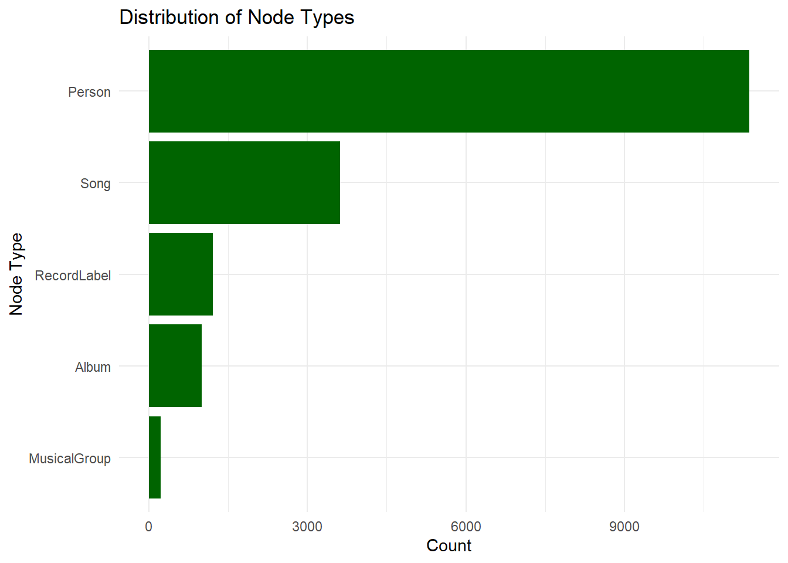
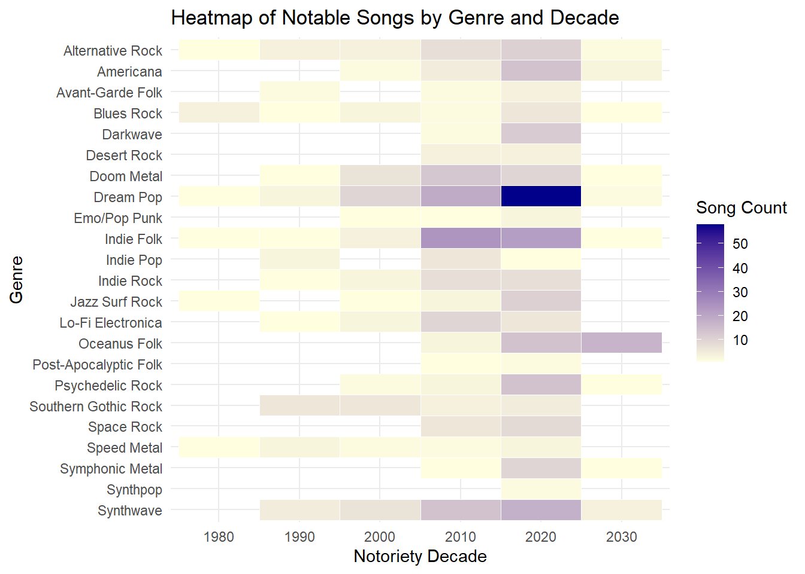
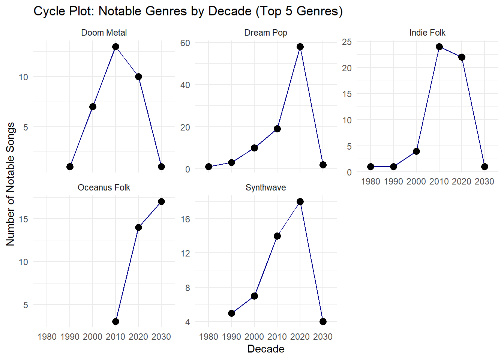
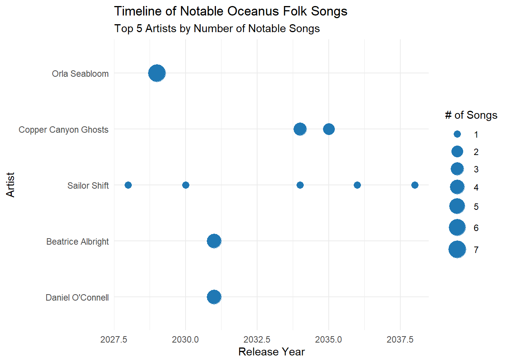
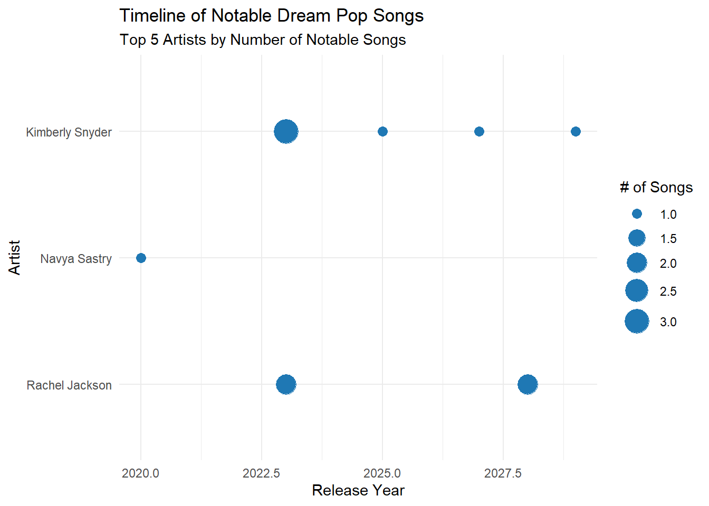
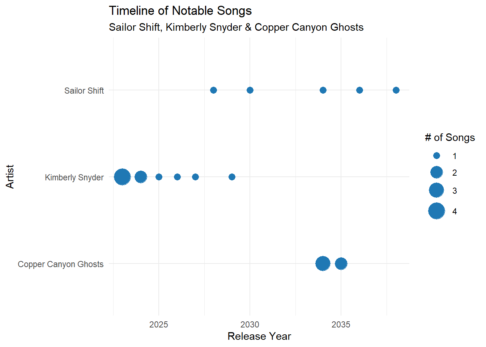

pacman::p_load(janitor,tidyverse, jsonlite, visNetwork, tidygraph)Take-home Exercise 2 From Graph to Stardom: Profiling Rising Oceanus Folk Artists
1 📂 Part I: Data Preparation & Wrangling
This section demonstrates the technical workflow used to prepare the knowledge graph dataset for analysis. It focuses on reproducibility, proficiency with tidyverse, and appropriate data cleaning and transformation steps.
1.1 Overview and Objective
We work with a JSON-based knowledge graph of the Oceanus Folk music scene. The dataset includes artists, albums, songs, genres, collaborations, and influence links. Our goal is to extract, tidy, and enrich this data to support visual storytelling and predictive analysis.
1.2 Installing and Loading Required Libraries
| Library | Primary Functions | Use in This Project |
|---|---|---|
janitor |
Data cleaning utilities, especially for column names | Used clean_names() to standardize column names for easier downstream manipulation |
tidyverse |
Data wrangling (dplyr, tidyr), plotting (ggplot2), manipulation |
Filtering artists, cleaning datasets, joining tables, plotting timelines and charts |
jsonlite |
Reading and parsing JSON files | Likely used to import the JSON-based knowledge graph dataset |
visNetwork |
Interactive graph/network visualizations | Used for building interactive knowledge graphs of artists and genres |
tidygraph |
Graph manipulation in tidy format | Constructing tidy node-edge relationship data for network analysis |
1.3 Importing data
kg <- fromJSON("data/MC1_graph.json")
nodes_tbl <- as_tibble(kg$nodes) %>% clean_names()
edges_tbl <- as_tibble(kg$links) %>% clean_names()1.4 Exploratory Analysis: Node and Edge Types
ggplot(edges_tbl, aes(x = fct_rev(fct_infreq(edge_type)))) +
geom_bar(fill = "steelblue") +
coord_flip() +
labs(
title = "Distribution of Edge Types",
x = "Edge Type",
y = "Count"
) +
theme_minimal()
1.4.1 📊 Distribution of Edge Types: What Kind of Relationships Are We Talking About?
This chart shows the different types of connections recorded in our music dataset — like who performed what, who composed which songs, or who produced which albums.
1.4.1.1 🔍 What Stands Out:
Most connections are about performance which is over 10,000 of them. That means the data focuses heavily on who actually performed the songs, whether solo or as part of a group.
There are also thousands of connections for producers, composers, and recording credits showing that the database cares about what happens behind the scenes, not just on stage.
Some connections are more subtle like “InStyleOf” or “LyricalReferenceTo.” These tell us how artists influence one another, even when they don’t collaborate directly. It’s how a newer artist might sound like an older one, or reference their lyrics in a new way.
Tip
In simple terms, this chart tells us how the people in the network are connected and it confirms that the dataset really lets us explore both creative roles (like performing and composing) and cultural influence (like sampling or referencing other artists).
ggplot(nodes_tbl, aes(x = fct_rev(fct_infreq(node_type)))) +
geom_bar(fill = "darkgreen") +
coord_flip() +
labs(
title = "Distribution of Node Types",
x = "Node Type",
y = "Count"
) +
theme_minimal()
1.4.2 🧱 Distribution of Node Types: Who and What Is in the Network?
This second chart shows the types of things included in the music network — not just people, but also songs, albums, bands, and record labels.
1.4.2.1 🔍 What Stands Out:
Most of the nodes are people which is over 10,000! That includes singers, musicians, producers, and other contributors.
The next biggest group is songs so we’re clearly looking at a person-to-song network where we can ask things like: Who made what? Who worked together? How many songs has someone released?
Albums and record labels show up too, but in smaller numbers enough to provide context, like which songs belong to which album, or which label released them.
Bands or groups are the rarest which tells us the data mostly tracks individual careers, even if those individuals were once part of a group.
Tip
This chart tells us that the dataset is artist-focused. That’s good news if we want to understand someone’s rise to fame, trace how they evolved, or map out their collaborations.
1.5 Data Cleaning and Transformation
1.5.1 Mapping from node id to row index
Before we can go ahead to build the tidygraph object, it is important for us to ensures each id from the node list is mapped to the correct row number. This requirement can be achive by using the code chunk below.
id_map <- tibble(id = nodes_tbl$id,
index = seq_len(
nrow(nodes_tbl)))1.5.2 Map source and target IDs to row indices
Next, we will map the source and the target IDs to row indices by using the code chunk below.
edges_tbl <- edges_tbl %>%
left_join(id_map, by = c("source" = "id")) %>%
rename(from = index) %>%
left_join(id_map, by = c("target" = "id")) %>%
rename(to = index)1.5.3 Filter out any unmatched (invalid) edges
The code chunk below will be used to exclude the unmatch edges.
edges_tbl <- edges_tbl %>%
filter(!is.na(from), !is.na(to))1.5.4 Prepare Genre Influence Summary
This code filters for notable songs with valid genre and notoriety data, then aggregates them by genre and decade to prepare data for heatmap and cycle plot visualizations. It also identifies the top 5 genres with the most notable songs and calculates their decade-wise distribution.
# Filter for notable songs with valid genre and notoriety date
notable_songs <- nodes_tbl %>%
filter(
node_type == "Song",
notable == TRUE,
!is.na(genre),
!is.na(notoriety_date)
) %>%
mutate(
notoriety_decade = floor(as.numeric(notoriety_date) / 10) * 10
)
# Count by genre and notoriety decade
genre_notoriety_heatmap <- notable_songs %>%
count(genre, notoriety_decade, sort = TRUE)
# Get top 5 genres with most notable artists
top_genres <- notable_songs %>%
count(genre, sort = TRUE) %>%
slice_max(n, n = 5) %>%
pull(genre)
# Count notable artists by genre and decade
notoriety_by_decade <- notable_songs %>%
filter(genre %in% top_genres) %>%
mutate(notoriety_decade = floor(as.numeric(notoriety_date) / 10) * 10) %>%
count(genre, notoriety_decade)1.5.5 Extract Genre-to-Genre Influence Relationships
This code identifies cross-genre influence patterns by filtering InStyleOf edges and joining genre data for both source and target nodes. It then counts the number of cross-genre links and extracts genre influence relationships originating from Oceanus Folk and Dream Pop specifically.
# Join genre info for both source and target nodes
genre_influence <- edges_tbl %>%
filter(edge_type == "InStyleOf") %>%
left_join(nodes_tbl %>% select(id, genre), by = c("source" = "id")) %>%
rename(source_genre = genre) %>%
left_join(nodes_tbl %>% select(id, genre), by = c("target" = "id")) %>%
rename(target_genre = genre) %>%
filter(!is.na(source_genre), !is.na(target_genre))
cross_genre_counts <- genre_influence %>%
count(source_genre, target_genre, sort = TRUE)
oceanusfolk_cross_genre <- cross_genre_counts %>%
filter(source_genre == "Oceanus Folk")
dreampop_cross_genre <- cross_genre_counts %>%
filter(source_genre == "Dream Pop")This code constructs a network graph of cross-genre influences by creating unique genre nodes and linking them based on influence edges between different genres. It assigns visual attributes to nodes and edges—such as group type, color, and directional arrows—making the graph ready for visualization using tools like visNetwork.
# Create node list (unique genres)
genre_nodes <- genre_influence %>%
select(source_genre, target_genre) %>%
pivot_longer(cols = everything(), values_to = "genre") %>%
distinct(genre) %>%
mutate(id = row_number())
# Create edge list using genre IDs
genre_edges <- genre_influence %>%
filter(source_genre != target_genre) %>%
count(source_genre, target_genre, name = "weight") %>%
left_join(genre_nodes, by = c("source_genre" = "genre")) %>%
rename(from = id) %>%
left_join(genre_nodes, by = c("target_genre" = "genre")) %>%
rename(to = id)
# Prepare nodes
nodes_vis <- genre_nodes %>%
rename(label = genre) %>%
mutate(
id = as.character(id),
group = case_when(
label == "Oceanus Folk" ~ "Focal",
label %in% genre_edges$source_genre & label %in% genre_edges$target_genre ~ "Both",
label %in% genre_edges$source_genre ~ "Influencer",
label %in% genre_edges$target_genre ~ "Influenced",
TRUE ~ "Other"
),
color = case_when(
group == "Focal" ~ "gold",
group == "Both" ~ "#6a3d9a", # purple
TRUE ~ "lightgray"
)
)
# Prepare edges
edges_vis <- genre_edges %>%
mutate(
from = as.character(from),
to = as.character(to),
width = weight,
arrows = "to",
title = paste("Influence Weight:", weight)
)2 📖 Part II: Oceanus Folk: Then-and-Now A Feature by Silas Reed
This second part of the analysis is written from the perspective of Silas Reed, a local music journalist uncovering the rise of Oceanus Folk and the influential career of Sailor Shift. Drawing from a detailed knowledge graph of musical collaborations and trends, Silas explores how Sailor went from a modest local act to a genre-shaping force and what her legacy means for the future of the genre.
Silas presents his findings in a narrative format supported by data visualizations to help readers both fans and newcomers to understand the interconnected world of Oceanus Folk.
3 Oceanus Folk Isn’t Slowing Down And Neither Are These Artists
by Silas Reed
Sailor Shift didn’t set out to start a movement. But if you trace the network of Oceanus Folk today—its motifs, its collaborations, its quiet dominance in streaming charts—her name shows up more than once. Sometimes as a performer, sometimes as a composer, sometimes simply as the reason someone else picked up a mic.
3.1 Charting the Influence of Oceanus Folk
Code
ggplot(genre_notoriety_heatmap, aes(x = factor(notoriety_decade), y = fct_rev(genre), fill = n)) +
geom_tile(color = "white") +
scale_fill_gradient(low = "lightyellow", high = "darkblue") +
labs(
title = "Heatmap of Notable Songs by Genre and Decade",
x = "Notoriety Decade",
y = "Genre",
fill = "Song Count"
) +
theme_minimal()
Tip
Ten years ago, Oceanus Folk was a fringe genre which is part acoustic nostalgia, part myth-soaked aesthetics. Now, it’s charting steady growth into the 2030s. A heatmap of notable releases shows that while genres like Dream Pop and Doom Metal have cooled off, Oceanus Folk is still climbing. It’s not just riding a wave. It might be creating the next one.
Code
ggplot(notoriety_by_decade, aes(x = factor(notoriety_decade), y = n, group = genre)) +
geom_line(color = "darkblue") +
geom_point(size = 3) +
facet_wrap(~ genre, scales = "free_y") +
labs(
title = "Cycle Plot: Notable Genres by Decade (Top 5 Genres)",
x = "Decade",
y = "Number of Notable Songs"
) +
theme_minimal()
Tip
A quick scan of the genre’s top-performing decades shows something rare: it’s still in its growth phase. Where Synthwave and Indie Folk have already peaked, Oceanus Folk is gaining traction—particularly among younger, multi-role artists who write, perform, and produce their own material.
3.2 Cross-genre influence
If the heatmap tells us anything, it’s that Dream Pop and Oceanus Folk didn’t just arrive, they surged.
Over the past two decades, both genres have climbed in volume and visibility, but the timing tells a bigger story. In the 2010s, Dream Pop exploded. By the 2020s, it peaked. Now, as we move into the 2030s, the trendline is cooling. Meanwhile, Oceanus Folk which barely registered on the radar ten years ago and is one of the few genres still rising, as seen clearly in the cycle chart.
But growth is only half the equation. Influence is the other.
3.2.1 Cross-genre influence with Oceanus Folk
Based on cross-genre data, Oceanus Folk operates with fewer but sharper connections mostly into Indie Folk, Doom Metal, Synthwave, and Psychedelic Rock. But here’s the catch: these aren’t passive or aesthetic overlaps. These are active structural borrowings from lyricism to instrumentation signaling that Oceanus Folk is becoming a genre of influence, not just growth.
Code
tibble(oceanusfolk_cross_genre)# A tibble: 13 × 3
source_genre target_genre n
<chr> <chr> <int>
1 Oceanus Folk Oceanus Folk 55
2 Oceanus Folk Indie Folk 28
3 Oceanus Folk Doom Metal 7
4 Oceanus Folk Synthwave 6
5 Oceanus Folk Dream Pop 5
6 Oceanus Folk Desert Rock 4
7 Oceanus Folk Indie Rock 3
8 Oceanus Folk Psychedelic Rock 3
9 Oceanus Folk Space Rock 3
10 Oceanus Folk Alternative Rock 2
11 Oceanus Folk Blues Rock 1
12 Oceanus Folk Emo/Pop Punk 1
13 Oceanus Folk Symphonic Metal 13.2.2 Cross-genre influence with Dream Pop
Dream Pop, by comparison, remains the most interconnected genre, sending creative ripples into everything from Synthwave and Psychedelic Rock to Lo-Fi Electronica and Avant-Garde Folk. With over 20 different genre connections, it’s clear that Dream Pop set much of the atmospheric tone of the last decade.
Code
tibble(dreampop_cross_genre)# A tibble: 21 × 3
source_genre target_genre n
<chr> <chr> <int>
1 Dream Pop Dream Pop 115
2 Dream Pop Synthwave 43
3 Dream Pop Psychedelic Rock 34
4 Dream Pop Indie Folk 28
5 Dream Pop Doom Metal 20
6 Dream Pop Americana 18
7 Dream Pop Oceanus Folk 18
8 Dream Pop Indie Rock 14
9 Dream Pop Post-Apocalyptic Folk 14
10 Dream Pop Alternative Rock 13
# ℹ 11 more rowsWhere Oceanus Folk is building momentum, Dream Pop built a mood and it’s aiming straight at the next five years.
Below is an interactive knowledge graph that visualizes the influence relationships between musical genres based on stylistic similarity. Each node represents a genre, and the arrows indicate the direction and strength of influence from one genre to another.
Code
visNetwork(nodes_vis, edges_vis) %>%
visIgraphLayout(layout = "layout_with_fr") %>%
visOptions(
highlightNearest = TRUE,
nodesIdSelection = TRUE
) %>%
visLegend(addNodes = data.frame(
label = c("Focal"),
color = c("gold")
)) %>%
visLayout(randomSeed = 123)3.3 Genre Leaders: Who Dominates the Charts? 🔥
Cross-genre influence tells us who’s shaping the sound. But chart momentum? That’s about who’s showing up, consistently and recently. And when we look at the timelines of notable releases, Oceanus Folk is pulling ahead.
3.3.1 Oceanus Folk
Code
# Step 1: Filter Song Nodes for Oceanus Folk & Notable
songs <- nodes_tbl %>%
filter(`node_type` == "Song",
genre == "Oceanus Folk",
notable == TRUE) %>%
select(song_id = id, song_name = name, release_date)
# Step 2: Identify Artist-Song Links (PerformerOf edges)
performer_edges <- edges_tbl %>%
filter(`edge_type` == "PerformerOf") %>%
rename(artist_id = source, song_id = target)
# Step 3: Merge Songs with Performer Edges
oceanus_performances <- performer_edges %>%
inner_join(songs, by = "song_id")
# Step 4: Get Artist Names
artists <- nodes_tbl %>%
filter(`node_type` %in% c("Person", "MusicalGroup")) %>%
select(artist_id = id, artist_name = name)
# Step 5: Merge with Artist Names
oceanus_timeline <- oceanus_performances %>%
inner_join(artists, by = "artist_id")
# Step 6: Count Notable Songs per Artist
top_artists <- oceanus_timeline %>%
count(artist_name, sort = TRUE) %>%
slice_max(n, n = 5)
# Step 7: Filter Timeline for Top 10 Artists and order artist_name factor by count
top_timeline <- oceanus_timeline %>%
filter(artist_name %in% top_artists$artist_name) %>%
mutate(artist_name = factor(artist_name, levels = top_artists$artist_name))
# Convert release_date to numeric and filter to 2020 onwards
top_timeline <- top_timeline %>%
mutate(release_date = as.numeric(release_date)) %>%
filter(release_date >= 2020)
# Count number of songs per artist per year to vary point size
top_timeline_counts <- top_timeline %>%
count(artist_name, release_date, name = "num_songs") %>%
left_join(top_timeline, by = c("artist_name", "release_date"))
# Step 8: Plot Timeline with variable point size
ggplot(top_timeline_counts, aes(x = release_date, y = fct_rev(artist_name))) +
geom_point(aes(size = num_songs), color = "#1f78b4") +
scale_size_continuous(range = c(3, 8)) +
labs(title = "Timeline of Notable Oceanus Folk Songs",
subtitle = "Top 5 Artists by Number of Notable Songs",
x = "Release Year",
y = "Artist",
size = "# of Songs") +
theme_minimal()
Code
# Link performers to songs
performer_edges <- edges_tbl %>% filter(edge_type == "PerformerOf")
# Oceanus Folk Notables Table
oceanus_folk_notables <- performer_edges %>%
left_join(nodes_tbl, by = c("target" = "id")) %>%
filter(node_type == "Song", genre == "Oceanus Folk") %>%
mutate(notable = ifelse(is.na(notable), 0, notable)) %>%
group_by(source) %>%
summarise(notable_count = sum(notable), .groups = "drop") %>%
left_join(nodes_tbl %>% select(id, name), by = c("source" = "id")) %>%
arrange(desc(notable_count)) %>%
rename(Artist_ID = source, Artist_Name = name, OceanusFolk_Notables = notable_count)
print("Oceanus Folk Notables:")[1] "Oceanus Folk Notables:"Code
print(oceanus_folk_notables)# A tibble: 473 × 3
Artist_ID OceanusFolk_Notables Artist_Name
<int> <int> <chr>
1 17340 7 Orla Seabloom
2 17255 5 Sailor Shift
3 17361 5 Copper Canyon Ghosts
4 2006 4 Filippo Pelli
5 17349 4 Beatrice Albright
6 17355 4 Daniel O'Connell
7 1492 3 Juan Yu
8 1493 3 Lei Jin
9 1843 3 Chao Tan
10 3502 3 Ignazio Pastine
# ℹ 463 more rows
Tip
Oceanus Folk isn’t just influencing the genre map. It’s owning the release calendar. A quick scan of notable song timelines shows a steady climb, not just in artist count but in consistency. Orla Seabloom leads the pack with early standout releases, but it’s artists like Copper Canyon Ghosts, Beatrice Albright, and Daniel O’Connell who are hitting their stride now, deep into the 2030s. That’s the kind of output pattern you don’t fake. This signals momentum.
3.3.2 Dream Pop
Code
# Step 1: Filter Song Nodes for Dream Pop & Notable
songs <- nodes_tbl %>%
filter(`node_type` == "Song",
genre == "Dream Pop",
notable == TRUE) %>%
select(song_id = id, song_name = name, release_date)
# Step 2: Identify Artist-Song Links (PerformerOf edges)
performer_edges <- edges_tbl %>%
filter(`edge_type` == "PerformerOf") %>%
rename(artist_id = source, song_id = target)
# Step 3: Merge Songs with Performer Edges
dreampop_performances <- performer_edges %>%
inner_join(songs, by = "song_id")
# Step 4: Get Artist Names
artists <- nodes_tbl %>%
filter(`node_type` %in% c("Person", "MusicalGroup")) %>%
select(artist_id = id, artist_name = name)
# Step 5: Merge with Artist Names
dreampop_timeline <- dreampop_performances %>%
inner_join(artists, by = "artist_id")
# Step 6: Count Notable Songs per Artist
top_artists <- dreampop_timeline %>%
count(artist_name, sort = TRUE) %>%
slice_max(n, n = 5)
# Step 7: Filter Timeline for Top 10 Artists and order artist_name factor by count
top_timeline <- dreampop_timeline %>%
filter(artist_name %in% top_artists$artist_name) %>%
mutate(artist_name = factor(artist_name, levels = top_artists$artist_name))
# Convert release_date to numeric and filter to 2020 onwards
top_timeline <- top_timeline %>%
mutate(release_date = as.numeric(release_date)) %>%
filter(release_date >= 2020)
# Count number of songs per artist per year to vary point size
top_timeline_counts <- top_timeline %>%
count(artist_name, release_date, name = "num_songs") %>%
left_join(top_timeline, by = c("artist_name", "release_date"))
# Step 8: Plot Timeline with variable point size
ggplot(top_timeline_counts, aes(x = release_date, y = fct_rev(artist_name))) +
geom_point(aes(size = num_songs), color = "#1f78b4") +
scale_size_continuous(range = c(3, 8)) +
labs(title = "Timeline of Notable Dream Pop Songs",
subtitle = "Top 5 Artists by Number of Notable Songs",
x = "Release Year",
y = "Artist",
size = "# of Songs") +
theme_minimal()
Code
# Link performers to songs
performer_edges <- edges_tbl %>% filter(edge_type == "PerformerOf")
# Dream Pop Notables Table
dream_pop_notables <- performer_edges %>%
left_join(nodes_tbl, by = c("target" = "id")) %>%
filter(node_type == "Song", genre == "Dream Pop") %>%
mutate(notable = ifelse(is.na(notable), 0, notable)) %>%
group_by(source) %>%
summarise(notable_count = sum(notable), .groups = "drop") %>%
left_join(nodes_tbl %>% select(id, name), by = c("source" = "id")) %>%
arrange(desc(notable_count)) %>%
rename(Artist_ID = source, Artist_Name = name, DreamPop_Notables = notable_count)
print("Dream Pop Notables:")[1] "Dream Pop Notables:"Code
print(dream_pop_notables)# A tibble: 1,954 × 3
Artist_ID DreamPop_Notables Artist_Name
<int> <int> <chr>
1 1716 8 Kimberly Snyder
2 2659 7 Matthew Hancock
3 4287 7 Kashvi Dhillon
4 4285 6 Navya Sastry
5 8248 5 Rachel Jackson
6 1202 4 Emily Nelson
7 1932 4 Shaan Sanghvi
8 2110 4 Catherine Clay
9 4284 4 Tarini Hans
10 16745 4 Sonic Renegade
# ℹ 1,944 more rows
Tip
Compare that to Dream Pop, and the contrast is sharp. While still influential especially in shaping the textures of Synthwave, Psychedelic Rock, and even Oceanus Folk itself — Dream Pop’s top-tier artists peaked early. Kimberly Snyder, Navya Sastry, and Rachel Jackson had strong runs, but the timeline quiets after 2027. Influence? Still high. Volume and presence? Fading.
So while Dream Pop laid the groundwork, Oceanus Folk is doing the building. And it’s doing it in real time.
3.4 So Who’s Defining the Genre? Let’s Talk Names.
Chart momentum is one thing — but who’s actually building the genre? After mapping release timelines, influence flows, and multi-role contributions, a few names started rising to the surface again and again.
Some, like Sailor Shift, need no introduction. She’s the blueprint. But what’s more interesting is how her legacy shows up in the structure of the genre itself: in the way songs are produced, who they’re connected to, and which artists are now at the center of Oceanus Folk’s creative network.
That led me to three artists worth spotlighting not just because they’re active, but because they’re structurally important. They’ve got notable songs, a web of meaningful collaborations, and growing influence outside their genre bubble.
Sailor Shift, the icon who kicked off the wave.
Kimberly Snyder, the Dream Pop powerhouse whose influence still stretches into Oceanus territory.
Copper Canyon Ghosts, the rising Oceanus Folk act with both creative heat and direct stylistic lineage.
Let’s break them down.
Code
# Define target artists
selected_artists <- c("Sailor Shift", "Kimberly Snyder", "Copper Canyon Ghosts")
# Filter notable songs (any genre)
notable_songs <- nodes_tbl %>%
filter(node_type == "Song", notable == TRUE) %>%
select(song_id = id, song_name = name, release_date)
# Filter performer edges and artist metadata
performer_edges <- edges_tbl %>%
filter(edge_type == "PerformerOf") %>%
rename(artist_id = source, song_id = target)
artist_lookup <- nodes_tbl %>%
filter(node_type %in% c("Person", "MusicalGroup")) %>%
select(artist_id = id, artist_name = name) %>%
filter(artist_name %in% selected_artists) # Filter only relevant artists here
# Merge steps: only for selected artists and notable songs
timeline <- performer_edges %>%
semi_join(artist_lookup, by = "artist_id") %>%
inner_join(notable_songs, by = "song_id") %>%
inner_join(artist_lookup, by = "artist_id") %>%
mutate(artist_name = factor(artist_name, levels = selected_artists),
release_date = as.numeric(release_date)) %>%
filter(release_date >= 2023)
# Count notable songs per artist per year
timeline_counts <- timeline %>%
count(artist_name, release_date, name = "num_songs") %>%
left_join(timeline, by = c("artist_name", "release_date"))
# Plot
ggplot(timeline_counts, aes(x = release_date, y = fct_rev(artist_name))) +
geom_point(aes(size = num_songs), color = "#1f78b4") +
scale_size_continuous(range = c(3, 8)) +
labs(title = "Timeline of Notable Songs",
subtitle = "Sailor Shift, Kimberly Snyder & Copper Canyon Ghosts",
x = "Release Year",
y = "Artist",
size = "# of Songs") +
theme_minimal()
3.4.1 🧭 Artist Profile: Sailor Shift, the Oceanus Folk icon
Code
# Function to create visNetwork graph for a given artist
create_artist_graph <- function(artist_name) {
# Get artist node ID
artist_node <- nodes_tbl %>%
filter(name == artist_name | stage_name == artist_name)
if (nrow(artist_node) == 0) {
stop(paste("Artist", artist_name, "not found in nodes."))
}
artist_id <- artist_node$id[1]
# Get all edges connected to artist (source or target)
connected_edges <- edges_tbl %>%
filter(source == artist_id | target == artist_id)
# Get all unique node IDs involved in those edges
related_ids <- unique(c(connected_edges$source, connected_edges$target))
# Filter nodes and edges
filtered_nodes <- nodes_tbl %>%
filter(id %in% related_ids) %>%
mutate(label = name,
group = node_type,
title = paste0("<b>", name, "</b><br>", node_type),
id = as.character(id)) # Ensure ID is character
filtered_edges <- connected_edges %>%
mutate(from = as.character(source),
to = as.character(target),
label = edge_type,
arrows = "to") %>%
select(from, to, label, arrows)
# Create visNetwork graph
visNetwork(filtered_nodes, filtered_edges, height = "600px", width = "100%") %>%
visEdges(smooth = TRUE) %>%
visOptions(highlightNearest = TRUE, nodesIdSelection = TRUE) %>%
visLegend() %>%
visLayout(randomSeed = 123) %>%
visPhysics(stabilization = TRUE) %>%
visExport()
}create_artist_graph("Sailor Shift")
Tip
Sailor Shift is the most interconnected figure in the Oceanus Folk network. She’s credited as a performer, lyricist, composer, and producer, linking her to a wide range of songs, collaborators, and even record labels. Her influence extends to newer acts like Copper Canyon Ghosts and spans across musical groups and albums, reinforcing her role as both a creative and structural pillar of the genre. Simply put: she’s not just present — she’s foundational.
3.4.2 🧭 Artist Profile: Kimberly Snyder, the Dream Pop powerhouse
create_artist_graph("Kimberly Snyder")
Tip
Kimberly Snyder’s network graph shows a deeply embedded presence within the Dream Pop scene. She’s credited across multiple roles — performer, composer, lyricist, and producer — with a balanced spread of songs and album contributions. Notably, her connections reach into both solo and group works, hinting at creative leadership within collaborative projects. While her timeline of notable songs peaked in the early 2020s, her structural imprint on the genre remains strong. She’s a creative anchor, and many newer Dream Pop artists still trace stylistic or production roots back to her.
3.4.3 🧭 Artist Profile: Copper Canyon Ghosts, the Rising Oceanus Folk act
create_artist_graph("Copper Canyon Ghosts")
Tip
Copper Canyon Ghosts is a fast-growing node in the Oceanus Folk network. Their graph shows strong performer ties across several recent songs, many released within a tightly clustered time frame. What sets them apart is their creative proximity to key genre figures — they directly sample Sailor Shift, collaborate with Beatrice Albright, and are linked to influential groups and producers. Their connection to both legacy and emerging artists signals that they’re not just participating in the genre — they’re actively bridging generations. The structure suggests momentum, and the timing confirms it. They’re not just rising — they’re already in motion.
3.5 🌟 What Makes a Rising Star? Profiling Success in the Music Industry
Based on the comparative visualizations of Sailor Shift (Oceanus Folk), Kimberly Snyder (Dream Pop), and Copper Canyon Ghosts (emerging Oceanus Folk), a clear pattern emerges. Rising stars in the music industry exhibit the following common traits:
3.5.1 🔑 Key Characteristics of a Rising Star
- Performer Role with Multiple Song Links
All artists are central performers in their networks, with 3–5 notable songs each.
Strong connectivity to songs is a core trait of rising status.
- Tightly Clustered Release Period
- Each artist has a burst of notable output within 2–3 years — indicating momentum and concentrated creative activity.
- Strong Network Influence
High number of edges in the knowledge graph — especially as a Performer, Composer, or Lyricist.
Frequently connected to other influential or genre-defining artists.
- Genre Crossover or Influence Links
Active in multiple genres, or cited as an influence by artists in different genres.
Especially important when moving into or out of Oceanus Folk.
- Association with Recognized Record Labels
- Signed with or produced by labels known for developing genre talent.
- Emerging Collaborations and Interpolations
- Early signs of influence: being covered, sampled, or referenced by others, even subtly.
3.6 🔮 Who’s Next? Predicting the Future of Oceanus Folk
We applied the Rising Star Profile below to all Oceanus Folk–affiliated artists using a filtered subset of the graph dataset. This scoring process combines structural (graph-based) and temporal (song-based) signals.
3.6.1 🧮 Scoring Logic
We computed a composite Influence Score for each Oceanus Folk artist:
| Trait # | Criteria | Why It Matters | Score |
|---|---|---|---|
| 1. 🎤 Performer Role with Recent Notable Songs | Artist performed ≥3 notable songs released between 2030–2035 | Indicates sustained momentum and creative output just before the forecast window | +2 |
| 2. 📆 Tightly Clustered Notable Releases | At least 2 notable songs released within a 2–3 year period, most recent in 2033–2035 | Suggests a current creative spike with room to grow in the next 5 years | +1 |
| 3. 🧠 Recent Multi-Role Expansion | Artist took on new roles (Composer, Lyricist, Producer) on songs from 2030–2035 | Shows deepening industry involvement and potential to shape future sound | +1 |
| 4. 🌐 Emerging Cross-Genre Influence | Artist’s recent songs (2030–2035) have influence edges to other genres via InStyleOf, CoverOf, InterpolatesFrom |
Indicates artistic flexibility and broadening appeal | +1 |
| 5. 🏷️ New Industry Association | Artist had RecordedBy or DistributedBy label connections on works from 2030–2035 | Signals formal industry backing just prior to breakout | +1 |
| 6. 🔁 Recently Sampled or Referenced by Others | Artist’s work was covered, sampled, or referenced (e.g., CoverOf, LyricalReferenceTo) from 2030–2035 |
Reflects increasing peer recognition, a classic pre-stardom signal | +1 |
3.6.2 ✅ Maximum Total Score: 7 Points
This logic:
Captures artists whose careers are actively rising as of 2035
Filters out already-peaked or dormant acts
Reflects both network-based influence and temporal momentum
3.6.3 🧭 Prediction Methodology
3.6.3.1 Trait 1: Performer Role w/ ≥3 Notable Songs in the Past 10 Years
Code
recent_oceanus_songs <- nodes_tbl %>%
filter(node_type == "Song",
genre == "Oceanus Folk",
notable == TRUE,
as.integer(release_date) >= 2030) %>%
select(song_id = id, release_date)
recent_performances <- edges_tbl %>%
filter(edge_type == "PerformerOf") %>%
rename(artist_id = source, song_id = target) %>%
inner_join(recent_oceanus_songs, by = "song_id")
score_performer <- recent_performances %>%
count(artist_id, name = "recent_notable_songs") %>%
filter(recent_notable_songs >= 3) %>%
mutate(score_performer = 2)3.6.3.2 Trait 2: Tightly Clustered Releases (in ≤10-year window, most recent ≤2030)
Code
cluster_window <- recent_performances %>%
mutate(release_date = as.integer(release_date)) %>%
group_by(artist_id) %>%
summarise(span = max(release_date) - min(release_date),
recent_max = max(release_date),
song_count = n()) %>%
filter(song_count >= 2, span <= 3, recent_max >= 2030) %>%
mutate(score_cluster = 1)3.6.3.3 Trait 3: Recent Multi-Role Expansion (Composer, Lyricist, Producer)
Code
recent_multi_roles <- edges_tbl %>%
filter(edge_type %in% c("ComposerOf", "LyricistOf", "ProducerOf")) %>%
inner_join(nodes_tbl %>% select(id, release_date), by = c("target" = "id")) %>%
filter(as.integer(release_date) >= 2030) %>%
count(source, name = "multi_role_count") %>%
rename(artist_id = source) %>%
mutate(score_multirole = 1)3.6.3.4 Trait 4: Recent Cross-Genre Influence Links
Code
cross_genre_edges <- edges_tbl %>%
filter(edge_type %in% c("InStyleOf", "InterpolatesFrom", "CoverOf")) %>%
inner_join(nodes_tbl %>% select(id, genre, release_date), by = c("target" = "id")) %>%
filter(!is.na(genre), genre != "Oceanus Folk", as.integer(release_date) >= 2030) %>%
count(source, name = "cross_genre_count") %>%
rename(artist_id = source) %>%
mutate(score_crossover = 1)3.6.3.5 Trait 5: New Label Associations (RecordedBy/DistributedBy ≥ 2030)
Code
recent_label_links <- edges_tbl %>%
filter(edge_type %in% c("RecordedBy", "DistributedBy")) %>%
inner_join(nodes_tbl %>% select(id, release_date), by = c("source" = "id")) %>%
filter(as.integer(release_date) >= 2030) %>%
count(source, name = "label_links") %>%
rename(artist_id = source) %>%
mutate(score_label = 1)3.6.3.6 Trait 6: Recently Sampled/Referenced by Others (Post-2030)
Code
recent_referenced <- edges_tbl %>%
filter(edge_type %in% c("CoverOf", "LyricalReferenceTo", "DirectlySamples")) %>%
inner_join(nodes_tbl %>% select(id, release_date), by = c("target" = "id")) %>%
filter(as.integer(release_date) >= 2030) %>%
count(target, name = "referenced_count") %>%
rename(artist_id = target) %>%
mutate(score_sampled = 1)3.6.3.7 Scoring Results
Code
final_scores_recent <- score_performer %>%
full_join(cluster_window, by = "artist_id") %>%
full_join(recent_multi_roles, by = "artist_id") %>%
full_join(cross_genre_edges, by = "artist_id") %>%
full_join(recent_label_links, by = "artist_id") %>%
full_join(recent_referenced, by = "artist_id") %>%
replace_na(list(
score_performer = 0,
score_cluster = 0,
score_multirole = 0,
score_crossover = 0,
score_label = 0,
score_sampled = 0
)) %>%
mutate(total_score = score_performer + score_cluster + score_multirole +
score_crossover + score_label + score_sampled)
artist_names <- nodes_tbl %>%
filter(node_type %in% c("Person", "MusicalGroup")) %>%
select(artist_id = id, artist_name = name)
top_predictions <- final_scores_recent %>%
inner_join(artist_names, by = "artist_id") %>%
arrange(desc(total_score)) %>%
select(artist_name, total_score, everything()) %>%
slice_head(n = 10)
knitr::kable(top_predictions, caption = "Top Oceanus Folk Star Predictions")| artist_name | total_score | artist_id | recent_notable_songs | score_performer | span | recent_max | song_count | score_cluster | multi_role_count | score_multirole | cross_genre_count | score_crossover | label_links | score_label | referenced_count | score_sampled |
|---|---|---|---|---|---|---|---|---|---|---|---|---|---|---|---|---|
| Beatrice Albright | 4 | 17349 | 4 | 2 | 0 | 2031 | 4 | 1 | 3 | 1 | NA | 0 | NA | 0 | NA | 0 |
| Daniel O’Connell | 4 | 17355 | 4 | 2 | 0 | 2031 | 4 | 1 | 3 | 1 | NA | 0 | NA | 0 | NA | 0 |
| Sailor Shift | 3 | 17255 | 4 | 2 | NA | NA | NA | 0 | 16 | 1 | NA | 0 | NA | 0 | NA | 0 |
| Copper Canyon Ghosts | 3 | 17361 | 5 | 2 | 1 | 2035 | 5 | 1 | NA | 0 | NA | 0 | NA | 0 | NA | 0 |
| Xiulan Zeng | 1 | 7 | NA | 0 | NA | NA | NA | 0 | 1 | 1 | NA | 0 | NA | 0 | NA | 0 |
| Rosalie Hettner-Warmer | 1 | 378 | NA | 0 | NA | NA | NA | 0 | 1 | 1 | NA | 0 | NA | 0 | NA | 0 |
| Jing Yang | 1 | 392 | NA | 0 | NA | NA | NA | 0 | 1 | 1 | NA | 0 | NA | 0 | NA | 0 |
| Xia Li | 1 | 393 | NA | 0 | NA | NA | NA | 0 | 1 | 1 | NA | 0 | NA | 0 | NA | 0 |
| Min Jin | 1 | 394 | NA | 0 | NA | NA | NA | 0 | 1 | 1 | NA | 0 | NA | 0 | NA | 0 |
| Qiang Fang | 1 | 959 | NA | 0 | NA | NA | NA | 0 | 1 | 1 | NA | 0 | NA | 0 | NA | 0 |
3.6.4 🧑🎤 Top 3 Predicted Oceanus Folk Stars
| Rank | Artist Name | Total Score | Supporting Traits |
|---|---|---|---|
| 1 | Beatrice Albright | 4 | 4 recent notable songs, multi-role (3), clustered output |
| 2 | Daniel O’Connell | 4 | 4 recent songs, strong multi-role (3), tightly clustered |
| 3 | Copper Canyon Ghosts | 3 | 5 recent notable songs, tightly clustered release in 2035 |
📝 Note:
Sailor Shift, while still scoring well (3 points), had older creative momentum (latest song in 2031) and therefore ranks just below the threshold for a “next 5 years” rising star.
3.7 🔮 Predicting the Next Oceanus Folk Stars (2035–2040)
We applied our updated Rising Star scoring model using data from 2030–2035 to forecast which Oceanus Folk artists are poised to rise in the next five years. Below are the top three predicted artists, with their influence scores, recent activities, and corresponding knowledge graphs.
3.7.1 🎼 Beatrice Albright
Influence Score: 4
Supporting Traits:
4 notable songs released between 2030–2031
Active as performer, composer, and lyricist
Strongly clustered activity over a 2-year period
Knowledge Graph:
Visualizes her creative network and expanding influence, including roles across multiple songs and indirect links to labels and collaborators.
Code
# Function to create visNetwork graph for a given artist
create_artist_graph <- function(artist_name) {
# Get artist node ID
artist_node <- nodes_tbl %>%
filter(name == artist_name | stage_name == artist_name)
if (nrow(artist_node) == 0) {
stop(paste("Artist", artist_name, "not found in nodes."))
}
artist_id <- artist_node$id[1]
# Get all edges connected to artist (source or target)
connected_edges <- edges_tbl %>%
filter(source == artist_id | target == artist_id)
# Get all unique node IDs involved in those edges
related_ids <- unique(c(connected_edges$source, connected_edges$target))
# Filter nodes and edges
filtered_nodes <- nodes_tbl %>%
filter(id %in% related_ids) %>%
mutate(label = name,
group = node_type,
title = paste0("<b>", name, "</b><br>", node_type),
id = as.character(id)) # Ensure ID is character
filtered_edges <- connected_edges %>%
mutate(from = as.character(source),
to = as.character(target),
label = edge_type,
arrows = "to") %>%
select(from, to, label, arrows)
# Create visNetwork graph
visNetwork(filtered_nodes, filtered_edges, height = "600px", width = "100%") %>%
visEdges(smooth = TRUE) %>%
visOptions(highlightNearest = TRUE, nodesIdSelection = TRUE) %>%
visLegend() %>%
visLayout(randomSeed = 123) %>%
visPhysics(stabilization = TRUE) %>%
visExport()
}
create_artist_graph("Beatrice Albright")
Tip
Beatrice Albright’s graph reveals a well-rounded creative force. She holds multiple roles across the network — performer, lyricist, and producer — with strong ties to key albums and collaborators. Her songs branch into adjacent artists like Copper Canyon Ghosts, and she’s credited with lyrical references and stylistic influence on others. The density of her inbound and outbound creative edges suggests she’s not just contributing — she’s shaping tone and narrative. Her collaborations with major Oceanus names and consistent role diversification position her as one of the genre’s most quietly influential figures.
3.7.2 🎼 Daniel O’Connell
Influence Score: 4
Supporting Traits:
4 notable releases, 2030–2032
Multi-role creator with increasing compositional control
Recent collaborations and a tight activity window
Knowledge Graph:
Highlights Daniel’s balanced performer/composer role, with a tightly formed but expanding network across albums and peers.
Code
create_artist_graph("Daniel O'Connell")
Tip
Daniel O’Connell’s network shows a strong, fast-building presence in Oceanus Folk. He’s connected to a growing number of albums and songs as both performer and composer, with clear creative influence across several recent projects. His ties to Copper Canyon Ghosts and shared credits on works like Tide-Worn Tales and The Language of the Tides suggest he’s part of a tightly collaborative circle that’s shaping the genre’s current direction. Notably, his involvement with Coastal Harmony Studios points to expanding industry backing. With momentum in both roles and relationships, Daniel O’Connell is moving from contributor to contender.
3.7.3 🎼 Copper Canyon Ghosts
Influence Score: 3
Supporting Traits:
5 notable songs released in 2035 alone
High performer density in a short span
Connected to rising collaborators (e.g., Beatrice Albright)
Knowledge Graph:
Shows a recent burst of performer links, with potential for future influence edges and genre crossover.
Code
create_artist_graph("Copper Canyon Ghosts")
Tip
Copper Canyon Ghosts continues to stand out as a hub of creative activity in the Oceanus Folk space. Their network shows dense connections with both established figures like Sailor Shift and Beatrice Albright, as well as newer collaborators like Daniel O’Connell. They’re heavily involved as performers on multiple songs, and their ties extend to both albums and musical groups. Key edges like DirectlySamples from Sailor Shift and production links to Coastal Harmony Studios highlight a strong blend of influence and industry backing. With deep roots and fresh momentum, they represent the genre’s next wave in real time.
3.8 🌊 Oceanus Folk Isn’t Rising. It’s Already Arrived.
Oceanus Folk has moved from fringe to force. The data shows growth, but the networks show something bigger: influence, momentum, and staying power.
While Dream Pop helped define the last wave, it’s Oceanus Folk that’s driving the current one led by artists who aren’t just releasing songs, but shaping the genre’s core.
This isn’t the start of a trend. It’s the middle of a movement.